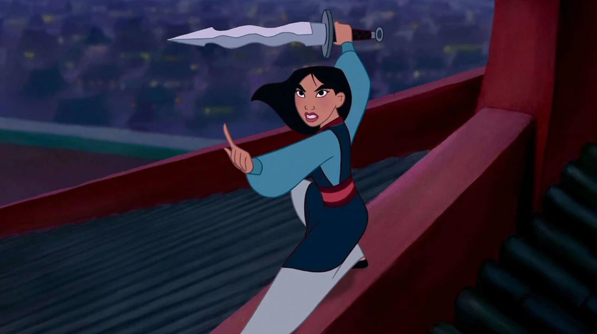

You have found the (un)official webpage of Disney's first Mulan movie. We come here to wallow in the mastery of everyone's favourite animated warrioress. Browse around to learn more, and sign up for our newsletter to stay up to date. Keep scrolling to see more or use the menue at the top of the page!

Keep scrolling!
PRODUCTION
Mulan is a 1998 American animated musical adventure film produced by Walt Disney Feature Animation for Walt Disney Pictures. It is based on the Chinese legend of Hua Mulan, and was Disney's 36th animated feature and the ninth animated film produced and released during the Disney Renaissance. It was directed by Barry Cook and Tony Bancroft, with story by Robert D. San Souci and screenplay by Rita Hsiao, Chris Sanders, Philip LaZebnik, Raymond Singer, and Eugenia Bostwick-Singer.
Mulan was the first of three features produced primarily at the Disney animation studio at Disney-MGM Studios (now Disney's Hollywood Studios) in Bay Lake, Florida. Development for the film began in 1994, when a number of artistic supervisors were sent to China to receive artistic and cultural inspiration. Mulan was well received by critics and the public who praised the animation, plot, characters (particularly the title character), and musical score, and grossed over $304 million, making it the second-highest grossing family film of the year. It earned a Golden Globe and Academy Award nomination and won several Annie Awards, including Best Animated Feature. It was then followed by Mulan II in 2004, a direct-to-video sequel. A live-action adaptation directed by Niki Caro was released on September 4, 2020.
It took five years for Mulan to be completed by 700 animators, artists and technicians.
PLOT
Mulan's father, Fa Zhou, is a retired soldier whose health has been steadily declining in his old age. When the emperor orders that one man from each family come forward to fight against the Huns, Mulan becomes increasingly worried about her father's safety. If he fulfills his conscription orders, his fate is inevitable. Because her father has no son to take his place, Mulan takes this duty upon herself.
Knowing that her parents would not approve of her decision, Mulan secretly takes her father's armor and disguises herself as a man. When the family learns of Mulan's departure, they pray to their ancestors. Through a series of unfortunate events, a dragon by the name of Mushu is sent to assist Mulan in her journey.
When Mulan reports for duty, she is discouraged to find that she is unable to perform well during initial training exercises. Captain Li Shang works hard with the new recruits, and Mulan is soon able to prove that she is ready to face the Huns in battle. When Mulan and her fellow soldiers are finally prepared for war, they set out to join the main army. However, they soon find the remains of a Chinese army and discover that the Huns have massacred the majority of the Chinese troops. Among the casualties was Li Shang's own father.
Li Shang and his soldiers are downcast. However, they have little time to grieve because they soon find themselves surrounded by Hun soldiers. Mulan quickly causes an avalanche and rescues her comrades, but is injured in the ensuing battle. While the doctor is bandaging her wounds, Mulan's true identity is discovered. Li Shang and his men depart for the imperial city to report their victory while Mulan, who has been expelled from the army, remains behind. When Mulan realizes that several enemy soldiers have survived the avalanche, she rushes forward to report that the victory has not yet been sealed.
Despite Mulan's best efforts, she is unable to convince Li Shang that the Huns are advancing. As a result, the Huns capture the emperor with ease. However, Mulan refuses to accept defeat. With the help of her former comrades, Mulan climbs onto the roof of the palace, challenges the leader of the Hun army, and rescues the emperor.
The emperor, who now owes his life to Mulan, asks her to become his adviser. However, Mulan declines and only requests that she be allowed to return home. After Mulan has been reunited with her family, Li Shang visits and is welcomed by Mulan's parents and grandmother.
FUN FACTS
Mulan has the highest kill count of any Disney character, including villains.
She does wipe out a whole army in a single avalanche...
The movie is based on a poem
The legend of Mulan is more than 1500 years old and the poem is called the Ballad of Mulan. The poem was originally part of a collection of lyrics and songs that no longer exists, so tracing the origin is a little difficult.
Mulan's not actually a princess
We would be the first to add our hero to any princess list (diversity and all) but she's not actually a princess. Mulan joins the army and then was honoured by the Emperor so only becomes a 'sort of princess', but she has no title. We prefer her as a strong, independent woman anyway.
Mulan is the first Disney animated film to openly deal with war